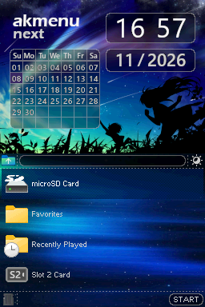

01 / NINTENDO DS
AKMenu-Next
A familiar Acekard/Wood-style menu for Nintendo DS, DSi and 3DS, built around nds-bootstrap and Pico-Loader.
I've been keeping the classic menu experience alive while adding practical improvements, plugins, customisation and better support for modern DS homebrew setups.

AKMenu-Next / Starlight · click to view full size